Referentes de la fotografía de moda
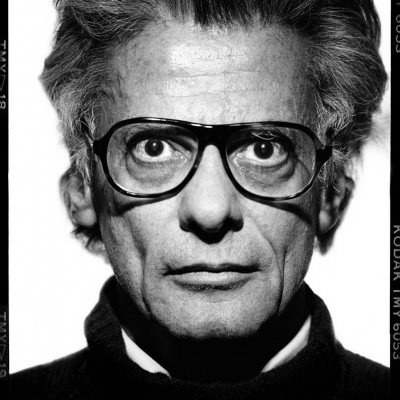
Richard Avedon (1923-2004)
Revolucionó el retrato y la moda con imágenes dinámicas y minimalistas. Su estilo capturaba movimiento y emoción, haciendo que sus modelos parecieran vivos y espontáneos. Trabajó para Harper’s Bazaar y Vogue, definiendo la fotografía moderna de moda con creatividad e innovación.
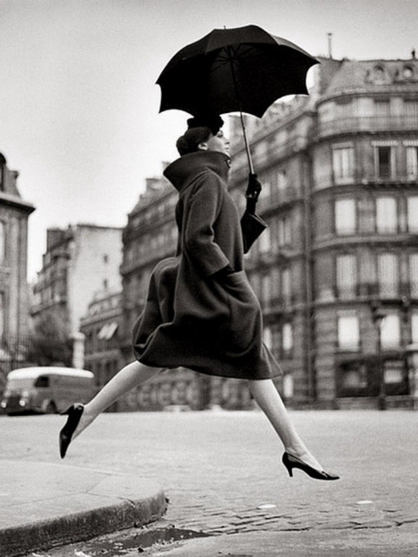
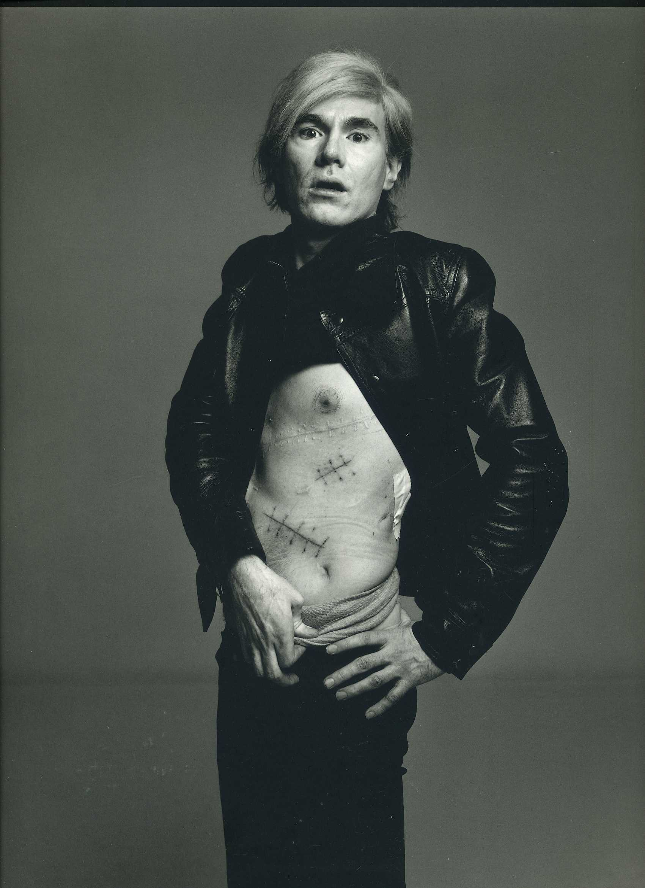
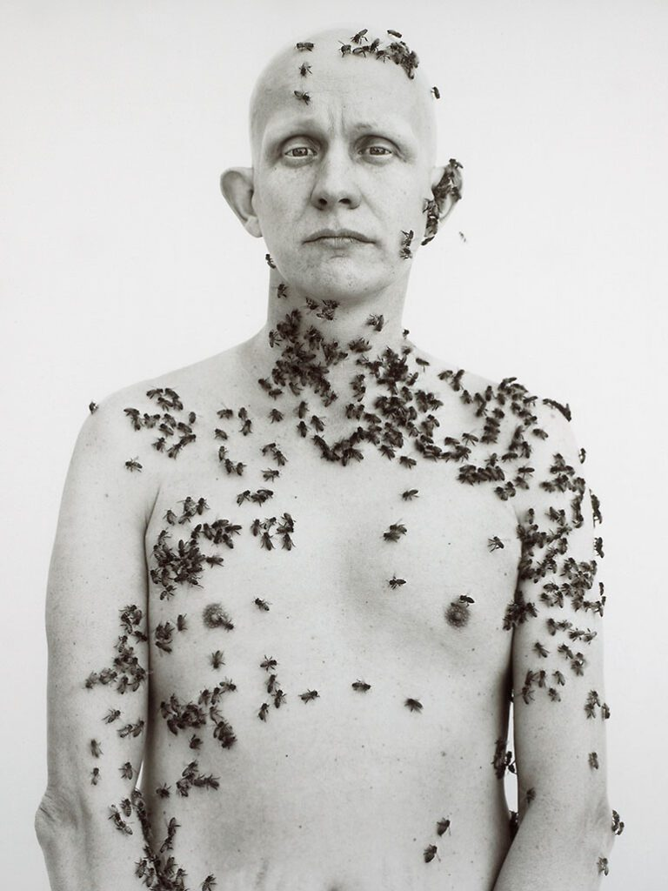
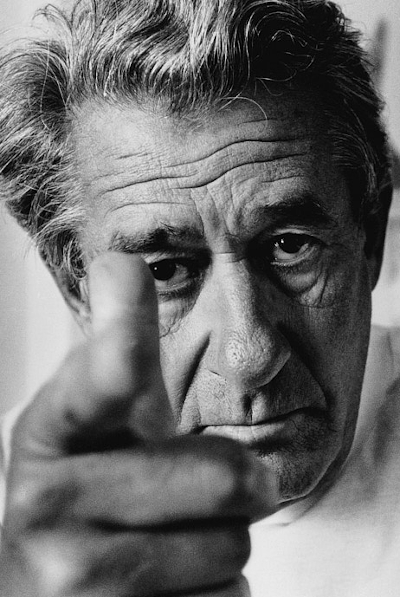
Helmut Newton (1920-2004)
Famoso por su estilo provocador y erótico en la fotografía de moda. Newton combinaba glamour, fetichismo y elegancia en sus imágenes, creando composiciones impactantes. Sus trabajos para Vogue y Vanity Fair marcaron un antes y un después en la representación de la mujer en la moda.
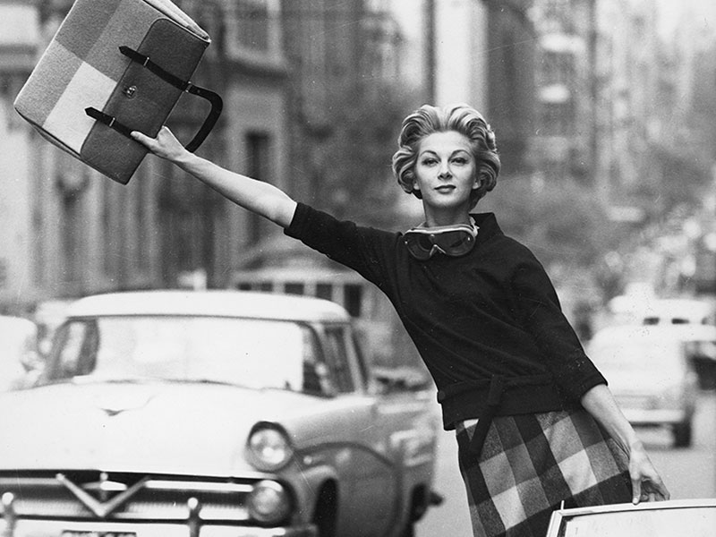
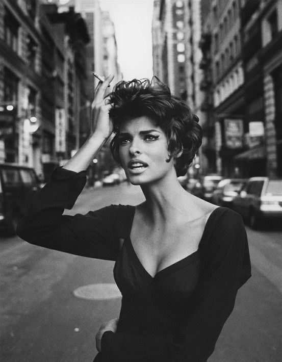
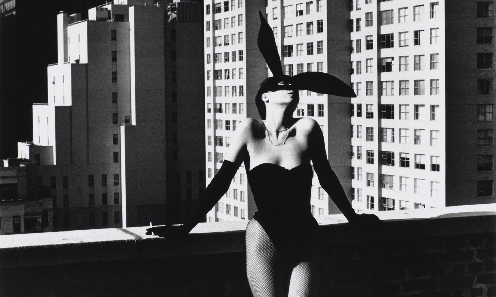
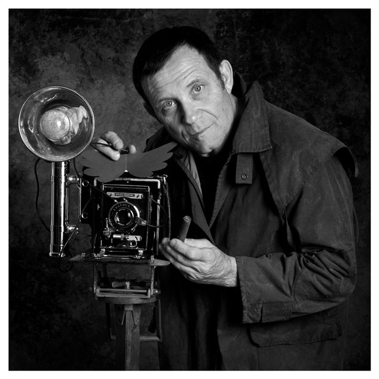
Irving Penn (1917-2009)
Conocido por composiciones limpias, iluminación elegante y un estilo minimalista. Penn trabajó con modelos, objetos y retratos de celebridades, logrando equilibrio y perfección en cada fotografía. Su legado influye todavía en la moda contemporánea y la fotografía editorial.
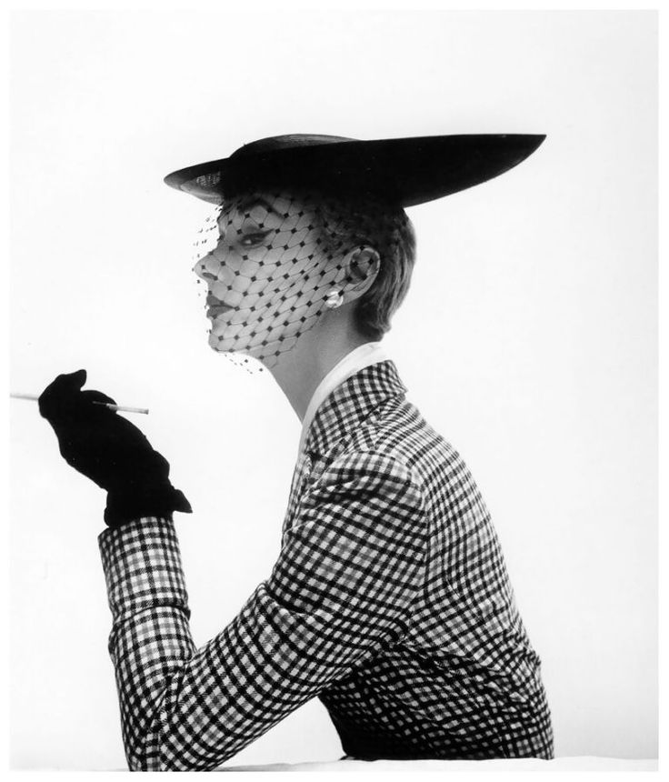
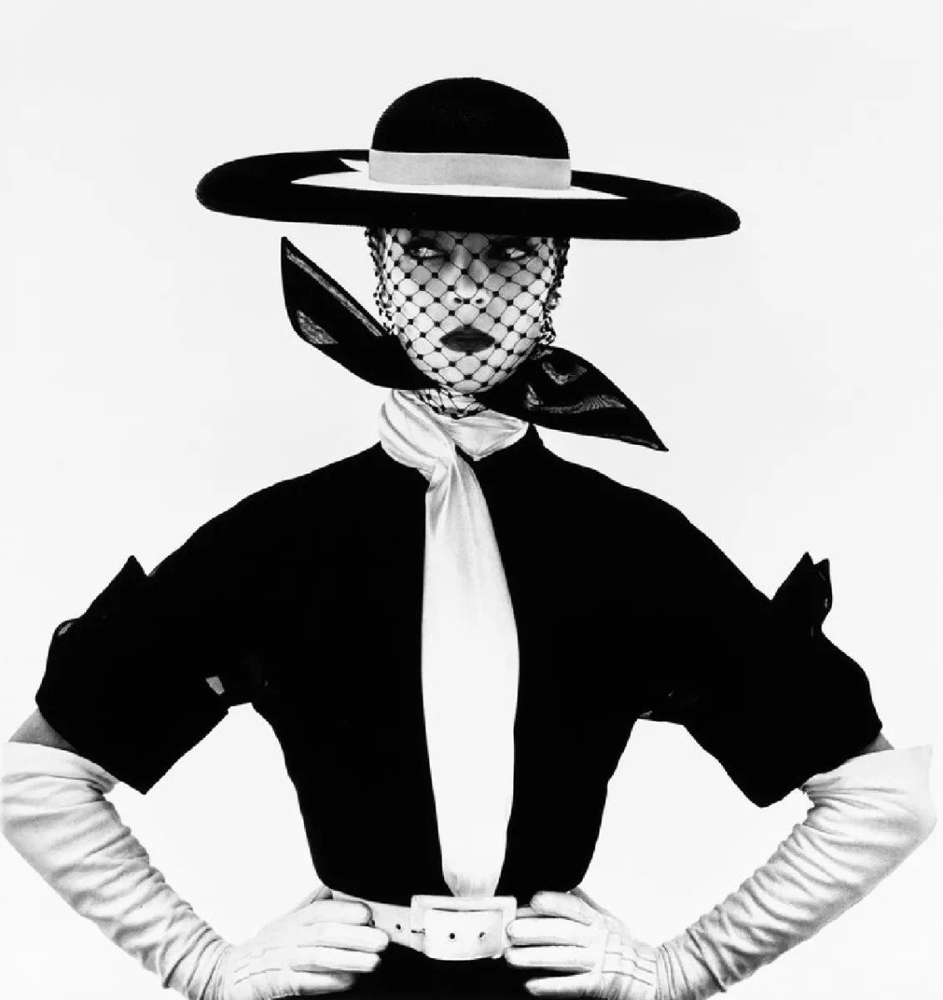
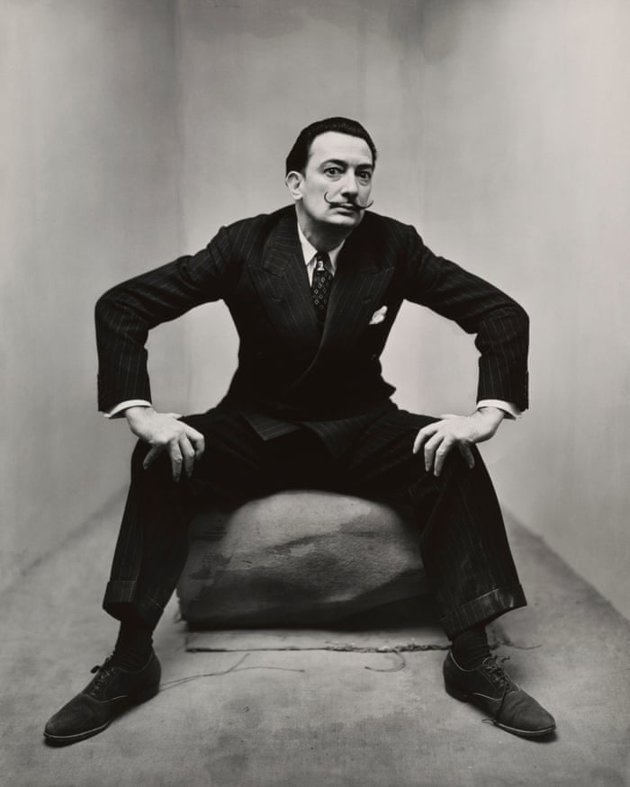
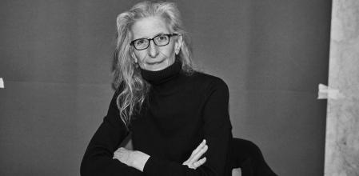
Annie Leibovitz (1949-)
Icono contemporáneo, famosa por retratos de celebridades y moda. Su fotografía es teatral, narrativa y llena de emoción. Ha trabajado con Vanity Fair y Rolling Stone, creando imágenes icónicas que combinan moda, personalidad y contexto cultural.


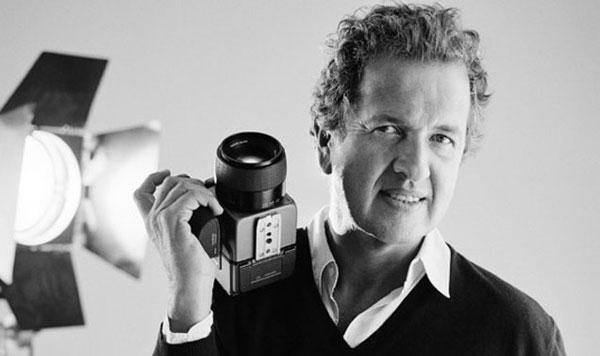
Mario Testino (1954-)
Fotografía vibrante y elegante, referente en revistas y campañas. Testino combina sofisticación, luz y estilo para crear imágenes llenas de energía y glamour. Sus trabajos con Vogue y Vanity Fair lo han convertido en uno de los fotógrafos más influyentes de la moda actual.
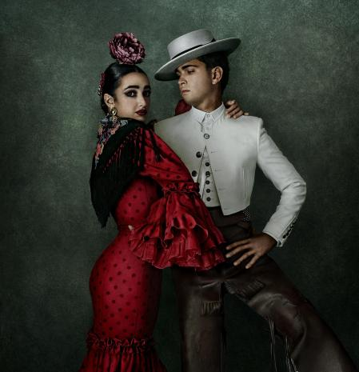
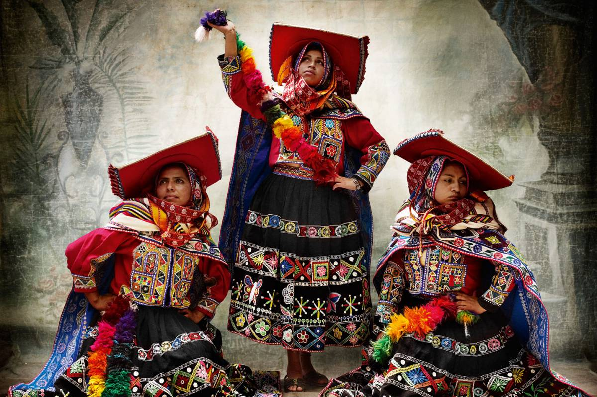
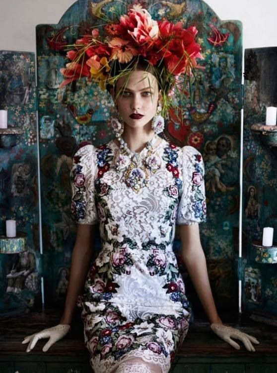